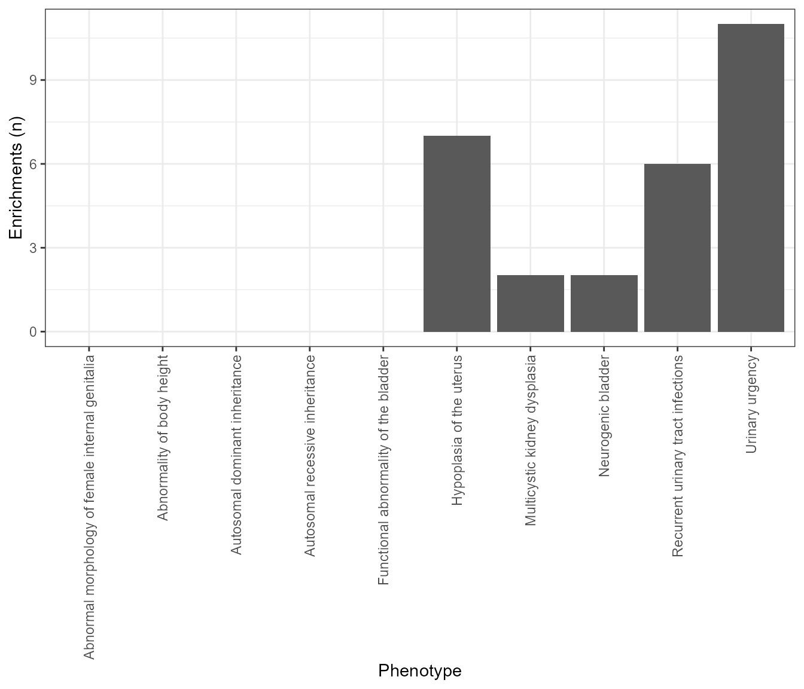

vignettes/MultiEWCE.Rmd
MultiEWCE.Rmd
library(MultiEWCE)The MultiEWCE package is an extension of the EWCE package. It is designed to run expression weighted celltype enrichment (EWCE) on multiple gene lists in parallel. The results are then stored both as separate .rds files, one for each individual EWCE analysis, as well as a in a single dataframe containing all the results.
This package is useful in cases where you have a large number of related, but separate, gene lists. In this vignette we will use an example from the Human Phenotype Ontology (HPO). The HPO contains over 9000 clinically relevant phenotypes annotated with lists of genes that have been found to be associated with the particular phenotype.
This tutorial will require the MultiEWCE package and a few additional packages related to the particular dataset we will be using. Install and load these with the following R code:
if (!require("HPOExplorer")) {
devtools::install_github("ovrhuman/HPOExplorer")
}
if (!require("ewceData")) {
install.packages("ewceData")
}The MultiEWCE package requires the gene data to be in a particular format. It must be a data.frame that includes one column of gene list names, and another column of genes. For example:
| Phenotype | Gene |
|---|---|
| “Abnormal heart” | gene X |
| “Abnormal heart” | gene Y |
| “Poor vision” | gene Z |
| “Poor vision” | gene Y |
| “Poor vision” | gene W |
| “Short stature” | gene V |
etc…
Now we will get a dataset like this from the HPO.
gene_data <- HPOExplorer::load_phenotype_to_genes(tempfile())
print(head(gene_data))
#> ID Phenotype EntrezID Gene Additional Source
#> 1 HP:0000002 Abnormality of body height 5073 PARN orphadata
#> 2 HP:0000002 Abnormality of body height 10084 PQBP1 orphadata
#> 3 HP:0000002 Abnormality of body height 50485 SMARCAL1 - mim2gene
#> 4 HP:0000002 Abnormality of body height 2317 FLNB orphadata
#> 5 HP:0000002 Abnormality of body height 79648 MCPH1 - mim2gene
#> 6 HP:0000002 Abnormality of body height 523 ATP6V1A - mim2gene
#> LinkID
#> 1 ORPHA:1775
#> 2 ORPHA:93950
#> 3 OMIM:242900
#> 4 ORPHA:503
#> 5 OMIM:251200
#> 6 OMIM:617403In this example our gene list names column is called Phenotype and our column of genes is called Gene. However, different column names can be specified to the MultiEWCE package.
# Loading CTD file (had to change all rownames to uppercase as the genelists are all upper)
ctd <- load_example_CTD()
list_names <- unique(gene_data$Phenotype)[1:10]
background_genes <- unique(gene_data$Gene)
list_name_column <- "Phenotype"
gene_column <- "Gene"
results_dir <- "results"
overwrite_past_analysis <- TRUE
MergeResults <- TRUE
reps <- 10
annotLevel <- 1
genelistSpecies <- "human"
sctSpecies <- "human"
cores <- 1The ctd (cell type data) file contains the single cell RNA sequence data that is required for EWCE. for further information about generating a ctd please see the EWCE documentation. In this example we will use a CTD of human gene expression data, generated from the Descartes Human Cell Atlas. Replace this with your own CTD file.
Gene data is the dataframe containin gene list names and genes, in this case we have already loaded it and assigned it to the variable gene_data.
This is a character vector containing all the gene list names. This can be obtained from your gene_data as follows. To save time in this example analysis we will only use the first 10 gene lists ([1:10])
This is a character vector of genes to be used as the background genes. See EWCE package docs for more details on background genes.
list_name_column is the name of the column in gene_data that contains the gene list names and gene_column contains the genes.
The results_dir argument is the path to the directory where the individual EWCE results will be saved.
The overwrite_past_analysis argument can be set to TRUE or FALSE and states if you want to redo and overwrite analysis of gene lists that have already been saved to the results_dir. Setting this to FALSE is useful in cases where you stopped an analysis midway and would like to carry on from where you left off.
MergeResults is another TRUE/FALSE argument. If TRUE, gen_results will also return a single dataframe containing all of the results from all gene lists. A .rds file of these merged results will also be saved to your current working directory in a file called “results_<datetime_of_analysis>.rds” ## Number of cores The cores argument is the number of cores you would like to run in parallel. This is dependent on what is available to you on your computer. In this case we will just run it on one core, no parallelism.
The gen_results function calls the EWCE bootstrap_enrichment_test function. Here we set the input parameters related to this.
reps is the number of bootstrap reps to run, for this tutorial we will only do 10 to save time, but typically you would want to do closer to 100,000.
annotLevel is the level of cell type specificity to use from the ctd file. genelistSpecies can be “human” or “mouse” and is the species of the genes in the gene lists.
sctSpecies is the species of the CTD data, also can be “human” or “mouse”.
Now we have set up all our desired inputs, we can run the analysis.
all_results <-MultiEWCE::gen_results(ctd,
gene_data,
list_names,
background_genes,
list_name_column,
gene_column,
results_dir,
overwrite_past_analysis,
reps,
annotLevel,
genelistSpecies,
sctSpecies,
cores,
MergeResults)
#> [1] "Abnormality of body height"
#> [1] "Multicystic kidney dysplasia"
#> [1] "Autosomal dominant inheritance"
#> [1] "Autosomal recessive inheritance"
#> [1] "Abnormal morphology of female internal genitalia"
#> [1] "Functional abnormality of the bladder"
#> [1] "Recurrent urinary tract infections"
#> [1] "Neurogenic bladder"
#> [1] "Urinary urgency"
#> [1] "Hypoplasia of the uterus"Seeing as we have ran EWCE on multiple gene lists, we need to make adjustments for multiple comparisons. We can use Benjamini-Hochberg procedure to false discovery rate adjusted p values (which we will call q values here).
all_results$q <- stats::p.adjust(all_results$p, method = "BH")
print(head(all_results))
#> CellType annotLevel p fold_change
#> AFP_ALB_positive_cells AFP_ALB_positive_cells 1 1.0 0.4546570
#> Acinar_cells Acinar_cells 1 1.0 0.6111867
#> Adrenocortical_cells Adrenocortical_cells 1 0.9 0.9373131
#> Amacrine_cells Amacrine_cells 1 1.0 0.6735268
#> Antigen_presenting_cells Antigen_presenting_cells 1 1.0 0.6150362
#> Astrocytes Astrocytes 1 0.4 0.9943838
#> sd_from_mean
#> AFP_ALB_positive_cells -5.1535687
#> Acinar_cells -3.1273970
#> Adrenocortical_cells -0.6819543
#> Amacrine_cells -5.0691603
#> Antigen_presenting_cells -4.8191763
#> Astrocytes -0.1655517
#> Phenotype q
#> AFP_ALB_positive_cells Abnormal morphology of female internal genitalia 1
#> Acinar_cells Abnormal morphology of female internal genitalia 1
#> Adrenocortical_cells Abnormal morphology of female internal genitalia 1
#> Amacrine_cells Abnormal morphology of female internal genitalia 1
#> Antigen_presenting_cells Abnormal morphology of female internal genitalia 1
#> Astrocytes Abnormal morphology of female internal genitalia 1Just as an example, we will create a plot showing the number of significant enrichments per phenotype in the all_results data.frame. We will use q <= 0.05 as the significance threshold.
library(ggplot2)
n_signif <- data.frame()
for (p in unique(all_results$Phenotype)) {
n_signif <- rbind(n_signif,
data.frame("Phenotype" = p
,"signif_enrichments"=length(
all_results$q[all_results$Phenotype == p &
all_results$q <= 0.05])))
}
plot1 <- ggplot(n_signif, aes(Phenotype,signif_enrichments)) +
geom_col() +
xlab("Phenotype") +
ylab("Enrichments (n)") +
theme_bw() +
theme(axis.text.x = element_text(angle=90,vjust = 0.5, hjust = 1))
print(plot1)
If you have a results directory of individual EWCE results but do not have the merged dataframe of all results, you can call the merge_results function manually. The results_dir argument is the path to your results directory and the list_name_column argument is the name of the column containing gene list names. In this case we used “Phenotype” as this column name when we generated the results.
all_results_2 <- MultiEWCE::merge_results(results_dir = "results",
list_name_column = "Phenotype")This function gets a character vector of genes assocaited with a particular gene list name.
eye_contact_genes <- MultiEWCE::get_gene_list(list_name = "Poor eye contact",
gene_data = gene_data,
list_name_column = "Phenotype",
gene_column = "Gene")
cat(paste("5 genes associated with poor eye contact:",paste(eye_contact_genes[1:5],collapse = " ")))
#> 5 genes associated with poor eye contact: TWNK PIGP CDKL5 NDUFAF4 NDUFC2This function is used to find which gene lists you have not yet analysed
unfinished <- MultiEWCE::get_unfinished_list_names(list_names = unique(gene_data$Phenotype)[1:15],
results_dir = "results")
cat(paste0("Gene lists not yet analysed:\n",paste(unfinished, collapse = ",\n")))
#> Gene lists not yet analysed:
#> Abnormality of the bladder,
#> Bladder diverticulum,
#> Urinary retention,
#> Nocturia,
#> Migrating focal seizure